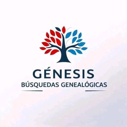

Changes to our services
Thank you for your trust
At MAGENHA we would like to thank everyone who has placed their trust in us and accompanied us in our genealogical research in Cuba.
As part of a new stage in the development and specialization of our project, we have decided to focus our new genealogical research services on Spain, so that we can keep refining our work and offer an ever more complete, high-quality service.
Clients who commission genealogical research in Cuba up to and including 15 November 2026 will be the last ones added to this service. From 16 November 2026 we will not accept new clients for research in Cuba.
This decision does not affect our current or former clients: we will continue to serve them entirely as normal, both in cases already open and in any new requests they make, under the conditions agreed.
For those who wish to begin or continue their research in Cuba, below we share a directory of independent researchers and organizations that offer genealogical services in the country.
These researchers do not belong to MAGENHA and are not affiliated with our project. Each one works independently and agrees the terms of their services directly with their clients.
If your research leads you to ancestors from Spain, we will be delighted to help you continue exploring your family roots in Spanish archives.
Researchers and organizations
Directory of genealogical researchers in Cuba
Researchers and organizations are listed in alphabetical order; the order does not imply any ranking. The stars show the average of the scores received through our rating form.
Inclusion in this directory does not imply any affiliation or commercial relationship with MAGENHA. Ratings represent users’ opinions and do not constitute a guarantee or certification of quality by our project.

Génesis Cuba
Genealogical and documentary research
Génesis Cuba is an independent team dedicated to genealogical research and the search for historical and family documents in Cuba.
It offers research services throughout Cuba, with a particular presence in the provinces of Holguín and Las Tunas, helping people who wish to reconstruct their family history and locate documentation about their ancestors.
- genesicuba@gmail.com
- Website
- genesis-cuba.vercel.app
Independent researcher or organization. MAGENHA shares these details with their permission but is not involved in hiring, payments or the provision of their services.

L. Z. Flores
Independent genealogical researcher
A researcher specializing in Cuban historical genealogy, mainly of the 17th, 18th and 19th centuries, with experience in locating sacramental records, marriage files, wills, notarial protocols and other historical documents.
Works mainly from Sancti Spíritus to Pinar del Río, and can exceptionally work in other regions of Cuba. Has experience with holdings of the Archivo Nacional de Cuba (National Archive of Cuba), diocesan and parish archives, as well as notarial, judicial and military records.
Also offers services to locate relatives, search for heirs, visit cemeteries and places of family interest, and provide photographic documentation in Cuba.
Does not undertake work aimed at Spanish nationality applications under the Democratic Memory Law (Ley de Memoria Democrática, LMD).
- WhatsApp (preferred)
- +53 5 579 6982
- lzflores47@gmail.com
Independent researcher or organization. MAGENHA shares these details with their permission but is not involved in hiring, payments or the provision of their services.
MAGENHA
Mapa Genealógico de Haplogrupos
MAGENHA —Mapa Genealógico de Haplogrupos— is a scientific project studying genealogy, Y-DNA and mtDNA uniparental lineages, population genetics and population history.
In Cuba it has carried out historical and genealogical documentary research through its network of authorized local collaborators: Catholic parish and diocesan baptism, marriage and burial records, historical Civil Registry records where access was available, and the documentary reconstruction and verification of historical family relationships.
Not accepting new clients in Cuba. From 16 November 2026 MAGENHA does not accept new clients for research in Cuba; its current and former clients continue to be served as normal.
MAGENHA’s own service, included so that its clients can rate it. Its ratings are calculated with the same form and method as the rest of the directory.

YUMURIGEN
Genealogy Study Project in Cuba
YUMURIGEN is an independent project dedicated to genealogical research and the reconstruction of family histories in Cuba.
With more than 16 years of experience, it carries out genealogical research throughout Cuba, helping people who wish to learn about their roots, document their ancestors and reconstruct their family history.
- yumurigen@gmail.com
Independent researcher or organization. MAGENHA shares these details with their permission but is not involved in hiring, payments or the provision of their services.
External resources
Resources for Researching Your Cuban Roots
Genealogical research often begins with a personal search. Archives, digital libraries, and documentary preservation projects make it possible to explore Cuban family history from anywhere in the world.
At MAGENHA, we share a selection of resources that may help you trace your ancestors, consult historical documents, and explore your family origins. Some provide direct access to digitized records, while others offer indexes, bibliographies, and research tools.
Genealogy and Indexes
Cuban Genealogy Club of Miami
An organization dedicated to preserving and promoting Cuban genealogy. It provides databases, indexes, transcriptions, census records, and publications relevant to Cuban family history research.
FamilySearch — Cuban Records
A genealogical platform offering Cuban church records and other historical documents, including baptisms, marriages, and family records. Some materials require a free account or have access restrictions.
CubaGenWeb
A Cuban genealogy project providing indexes, documentary references, databases, and research guides, including resources on surnames, families, and migration.
Cuba Research Project
A Cuban genealogical research platform offering person-search tools and references to historical documents, including indexes of publications on Cuban families.
Archives and Digitized Records
British Library — Endangered Archives Programme
An international program dedicated to preserving and digitizing endangered historical archives. Its Cuba-related projects include ecclesiastical records and other historical collections useful for genealogical research.
Cuba projects:
- EAP955 (opens in a new tab) ecclesiastical records of Cuba’s original seven villas
- EAP184 (opens in a new tab) African diaspora collections in the archives of Matanzas province
- EAP843 (opens in a new tab) ecclesiastical documents from Santiago de Cuba, Bayamo, Trinidad and Baracoa
Slave Societies Digital Archive — Vanderbilt University
A digital archive of historical and ecclesiastical records, particularly important for researching the lives of enslaved and free Africans and people of African descent in Cuba and other Atlantic societies.
Migration Records Portal (Movimientos Migratorios) — Spanish State Archives
A Spanish State Archives portal dedicated to historical migration records. It can be particularly useful for connecting Cuban genealogical research with ancestors' origins in Spain.
Libraries and Historical Collections
Enrique Hurtado de Mendoza Collection — Florida International University
A valuable collection for genealogical research containing materials on Cuban families, including manuscripts, genealogies, correspondence, rare books, and historical documents.
Cuban Heritage Collection — University of Miami
A collection specializing in Cuban history, culture, and the diaspora. It preserves personal archives, photographs, correspondence, newspapers, and other materials useful for reconstructing family histories.
Digital Library of the Caribbean (dLOC)
A collaborative digital library dedicated to preserving Caribbean documentary heritage. It includes newspapers, books, photographs, and historical documents, including Cuban publications useful for family history research.
The resources listed here belong to institutions and projects independent of MAGENHA. Their availability, access conditions, and content are determined by their respective organizations. We recommend reviewing each collection's terms of use and verifying genealogical findings against original documentary sources.
Help the directory grow
Do you know other genealogical researchers in Cuba?
We want this directory to keep growing and to help more people interested in researching their Cuban family history.
If you know a researcher or organization offering genealogy services in Cuba, you can suggest their contact through the form below.
MAGENHA will contact the suggested professionals to ask for their permission before including their details in the directory.
Suggest a researcherThe form to suggest researchers will be available soon.